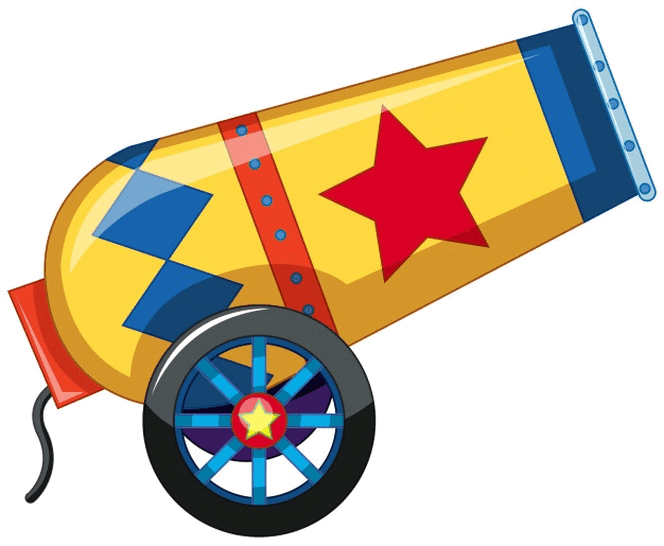
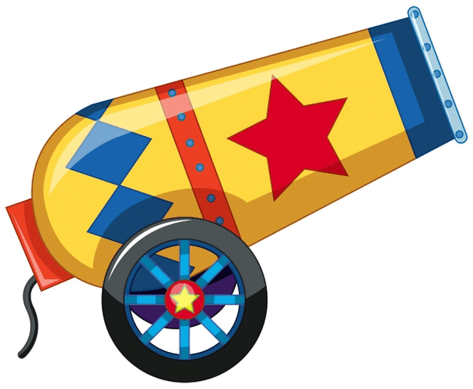
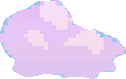
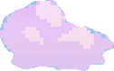

El movimiento parabólico es un concepto fundamental en la física que describe el movimiento de un objeto lanzado en un ángulo en el aire. En este tipo de movimiento, el objeto sigue una trayectoria parabólica debido a la influencia de la gravedad y la velocidad inicial.
Un objeto se lanza con una velocidad inicial de 10 m/s a un ángulo de 30 grados con respecto a la horizontal. Encuentra la altura máxima que alcanza el objeto.
Un proyectil es lanzado horizontalmente desde una altura de 40 metros. Encuentra el tiempo que tarda en llegar al suelo.
Un proyectil se lanza con una velocidad inicial de 15 m/s a un ángulo de 45 grados con respecto a la horizontal. Encuentra el alcance horizontal.
Este es un pequeño ejemplo de lo que es el movimiento parabólico.
 

 
